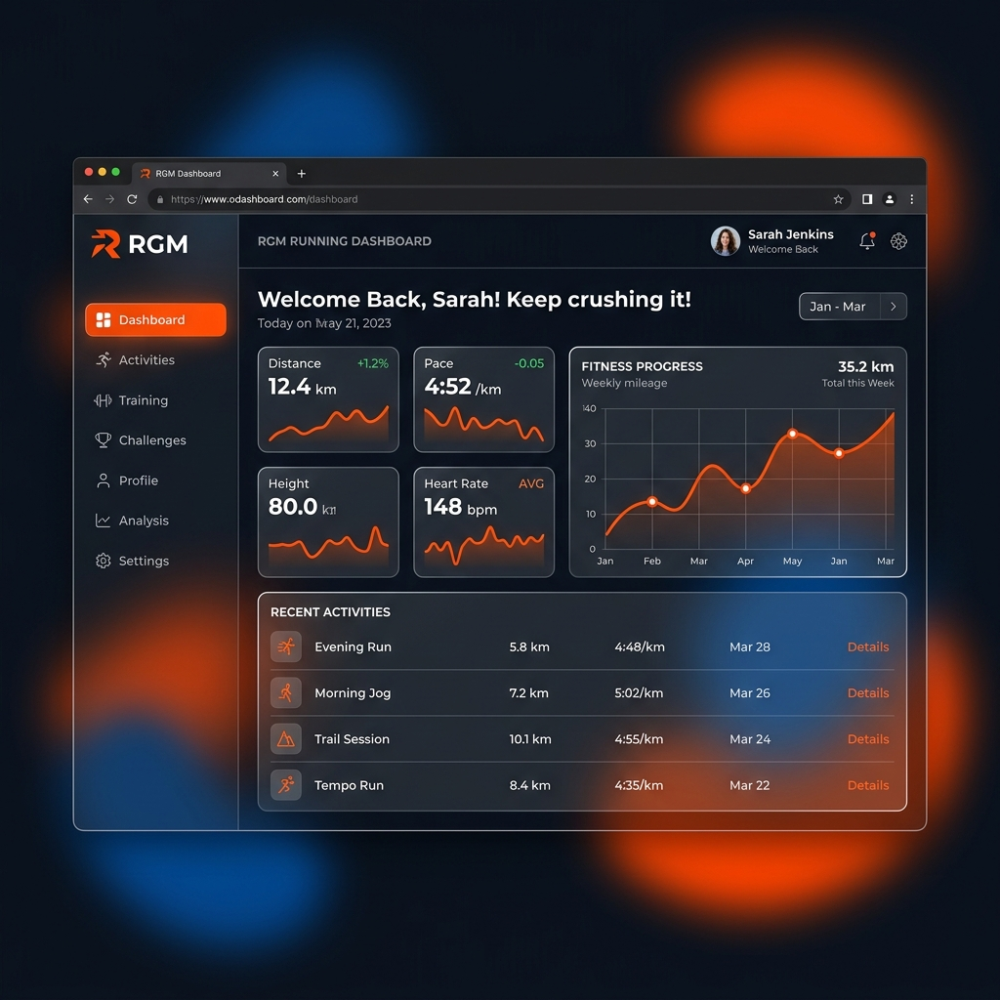
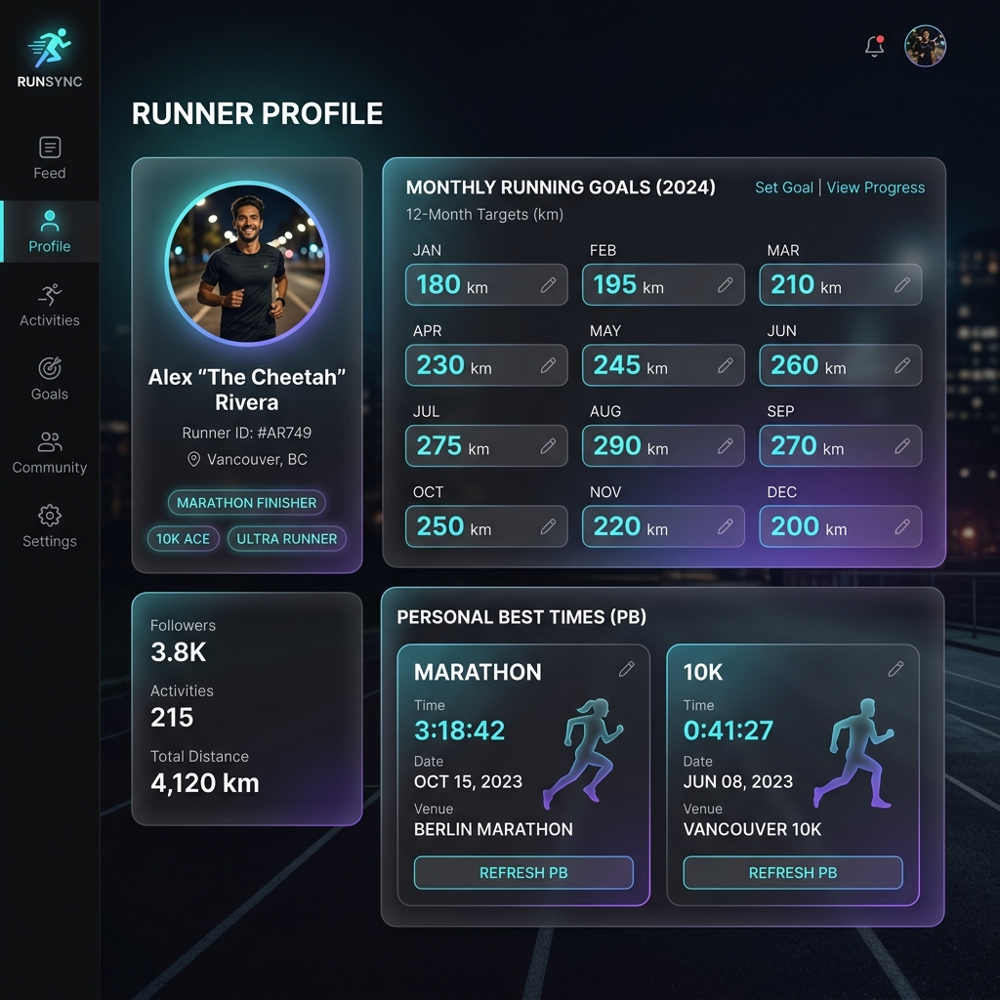
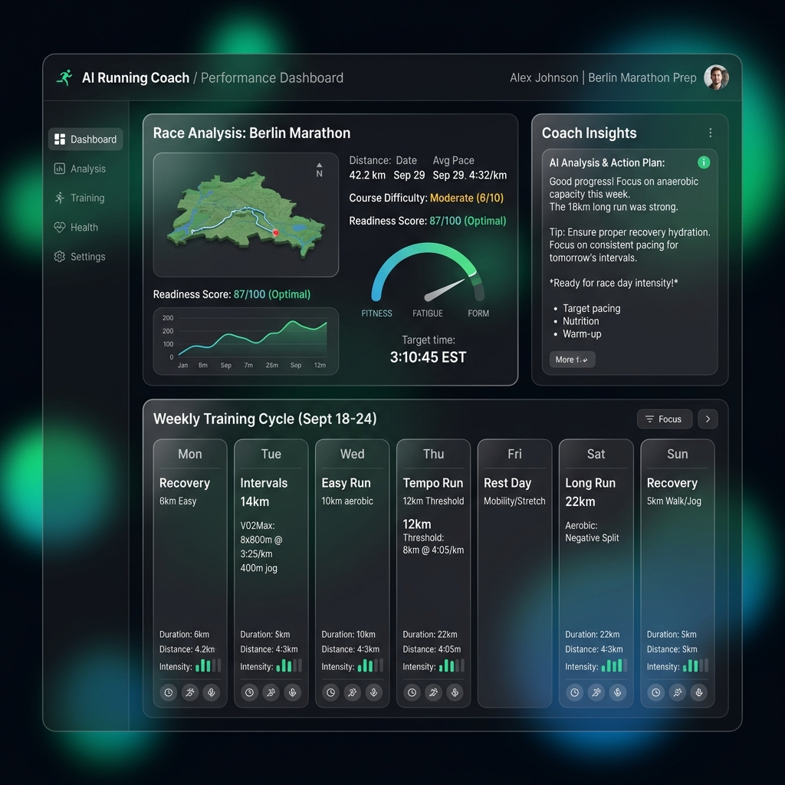
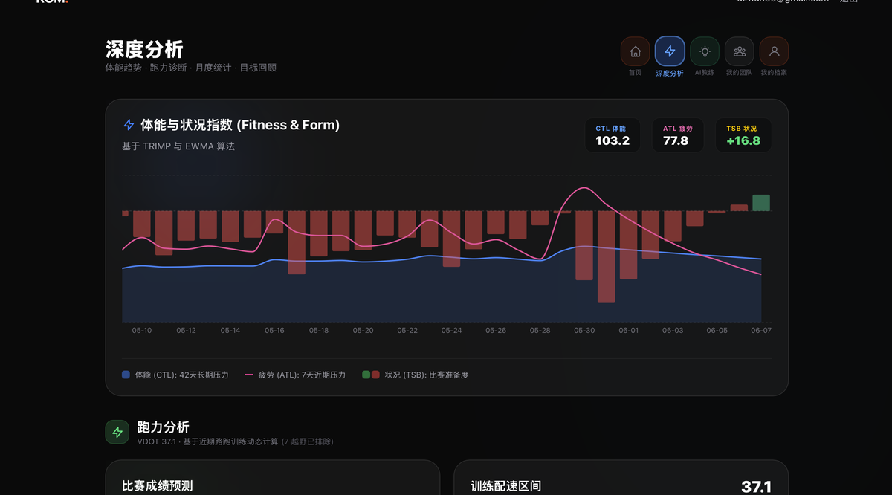
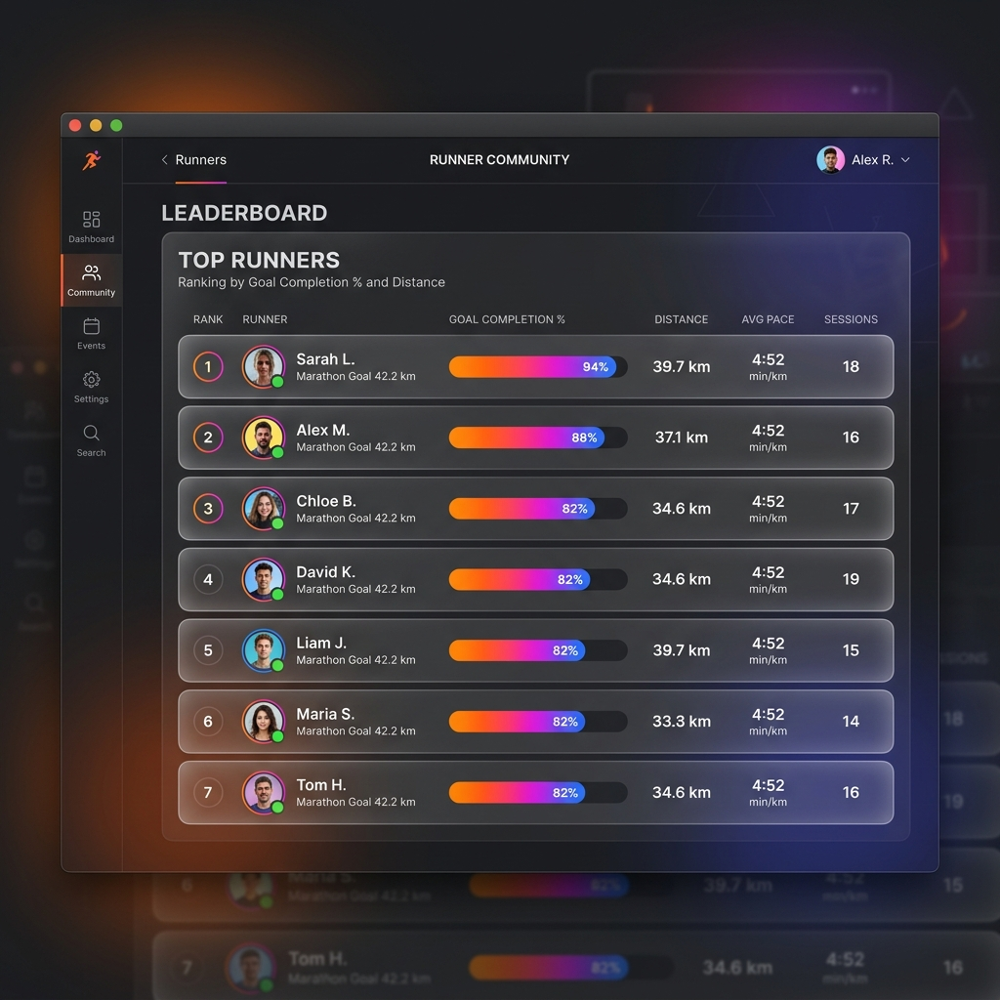

欢迎使用 RGM (Running Community Manager)！本手册将帮助您快速了解和使用平台的核心功能。
轻松开启您的 RGM 之旅：
使平台能够获取您的跑步数据，您必须连接 Strava 账号：
在登录后的每一个页面右上角，您都能看到快捷的全局导航入口，它们分别是：

您的个人控制台，集中展示了您最近的跑步状态：

点击导航栏进入 Profile 页面，定制您的个人档案：

以 Renato Canova 训练哲学为核心的专业指导：

提供长周期的深度数据挖掘功能：

在 跑者档案 (Profile) 页面底部，您可以与跑友们组建团队，共同挑战极限：
绑定企业微信，解锁 RGM 跑团专属的双重 AI 互动体验：